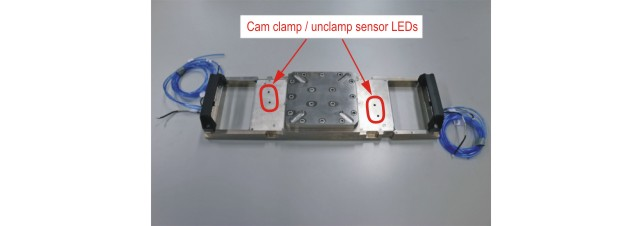
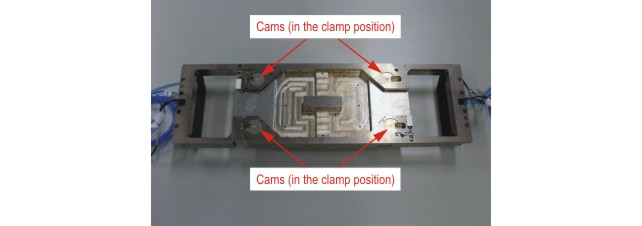
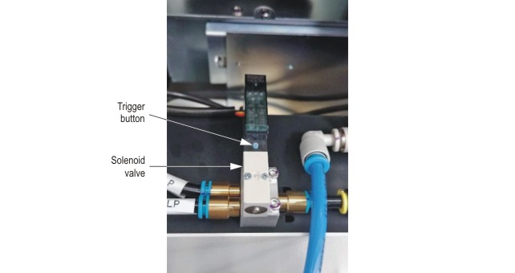
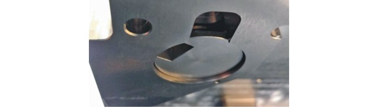
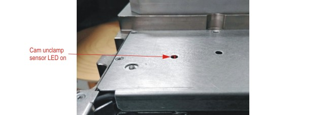
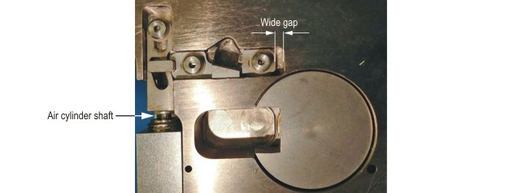
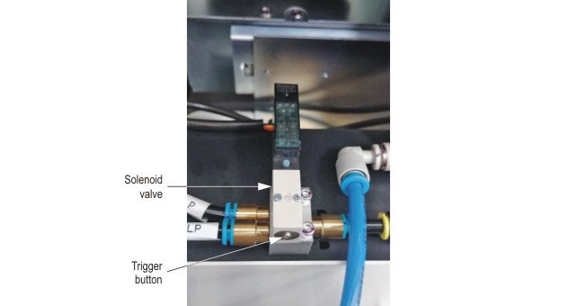
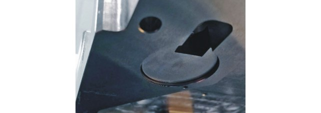
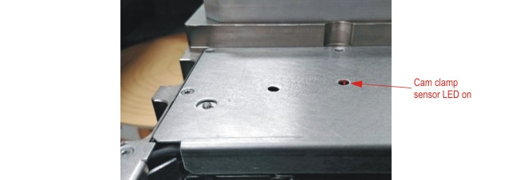
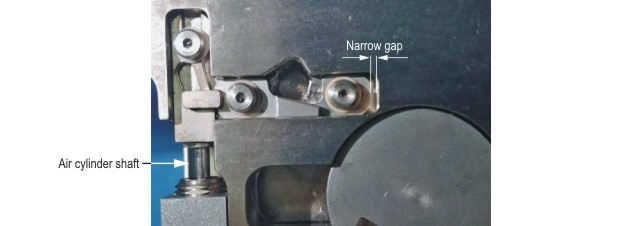

By following the instructions in this topic you verify the proper operation of the wafer
prober following the completion of phase 1 of the installation.
About this task
Verify that the pneumatic locking mechanism works correctly.
Note Do not proceed
to phase 2 of the installation unless you have completed phase 1 of the
verification procedure.
The following figures show the top and bottom sides of the bridge beam for the purpose of orientation.


Before you begin
Check that there are no loose wires or air tubing inside the prober head stage.
Power on the prober. Do not initialize the prober at this time.
Procedure
Verify that the cams of the locking mechanism move into the open / unclamp
position.
Locate the blue trigger button on the solenoid valve, located on the
side of the prober.

Press and hold the button for 1 second.
Verify that the four cams underneath the bridge beam are in the unclamp
/ open position as shown.

Verify that the LEDs for the unclamp sensors on both sides of the
bridge beam are on.

Verify that both X-Y clamps are in the open position as shown. Note the
length of exposed air cylinder shaft (short) and the gap in the x-y
clamp mechanism (wide).

Verify that the cams of the locking mechanism move into the closed / clamp
position.
Locate the silver trigger button on the solenoid valve, located on the
side of the prober.

Press and hold the button for 1 second.
Verify that the four cams underneath the bridge beam are in the clamp /
closed position as shown.

Verify that the LEDs for the clamp sensors on both sides of the bridge
beam are on.

Verify that both X-Y clamps are in the closed position as shown. Note
the length of exposed air cylinder shaft (long) and the gap in the x-y
clamp mechanism (narrow).

Results
You have verified the correct operation of the pneumatic locking mechanism, following phase 1
of the installation procedure.